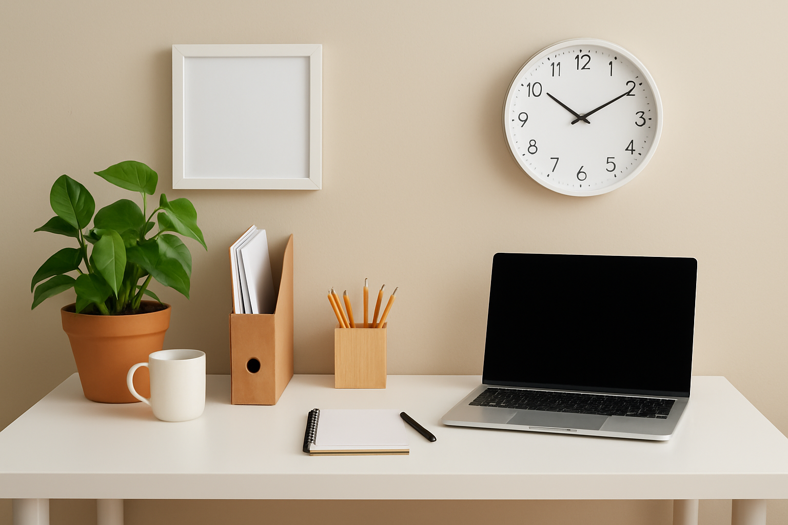

The 10-Minute Daily Declutter
Keep Mess Away Without a Big Clean-Up Day
If you’ve ever spent your whole weekend cleaning, only to have the house messy again by Tuesday, you’re not alone. Big clean-ups are exhausting — and they don’t always last. That’s why I swear by the 10-minute daily declutter. It’s simple, quick, and keeps your home in a state you actually enjoy living in.
In this guide, I’ll share exactly how I do it, how you can fit it into your life (even if you’re busy), and my favorite quick decluttering tips for every room.
Why 10 Minutes Works
You don’t need hours. Ten minutes a day means:
- Clutter never builds up into an overwhelming mess
- You can fit it into a lunch break, before bed, or right after dinner
- You start building habits without even realizing it
Step-by-Step: The 10-Minute Declutter Routine
1. Pick Your Zone
Don’t wander the whole house. Choose one small area: a counter, a drawer, or one section of your living room.
2. Clear the Surface
Put away anything that clearly doesn’t belong there. Mail, mugs, jackets — gone.
3. Quick Sort
Have a “put away” basket for things that belong in other rooms. This keeps you from losing time running back and forth.
4. Toss or Donate
If you see something you don’t use or love, make a quick decision: toss it, recycle it, or add it to your donation box.
5. Reset and Walk Away
When the timer’s up, stop. You’re done. That’s the secret — keep it short so you don’t burn out.
Room-by-Room Quick Wins
Kitchen
- Unload and reload the dishwasher
- Wipe counters and put away small appliances you’re not using
- Sort the fridge door — expired sauces are a common culprit
Living Room
- Fold blankets and fluff pillows
- Gather remote controls into a basket or tray
- Put books, magazines, or game controllers back in place
Bedroom
- Clear nightstands
- Put dirty clothes in the hamper
- Fold and store clean laundry
Bathroom
- Put away toiletries after use
- Wipe down the sink
- Replace empty toilet rolls or hand towels
Making It a Habit
The magic isn’t in one session — it’s in doing it every day. Here’s how to make it stick:
- Pair it with something you already do — like after making coffee or right before bed.
- Use music or a podcast — it makes the time fly.
- Track your streak — seeing your progress can be motivating.
Final Thoughts
The 10-minute daily declutter isn’t about creating a picture-perfect home. It’s about feeling more in control, less stressed, and having more time for the things you love. Start today — just one area, ten minutes. You’ll be amazed how quickly it becomes second nature.
← Back to Blog